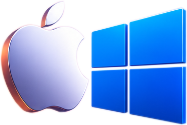
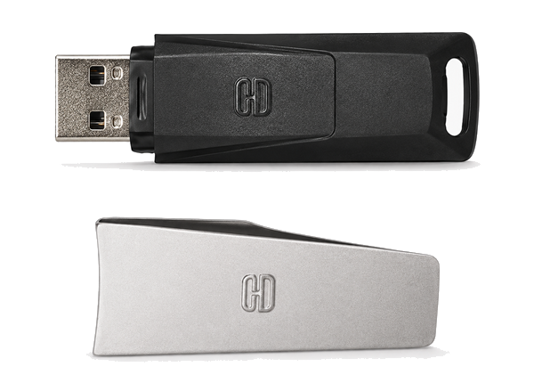
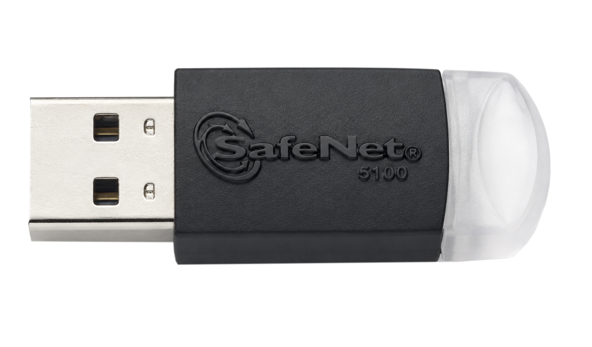
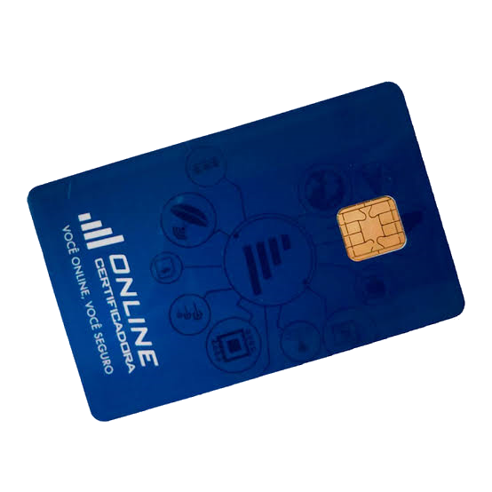
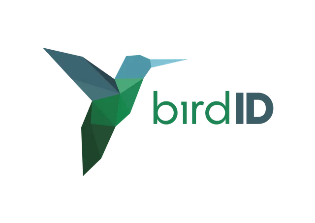
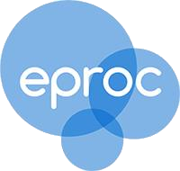

Por qual certificado você assina?





Compatível com os sistemas que você já usa

Não consegue acessar os tribunais? Protocolar petição? Chama o suporte!
Nenhuma fraude identificada nesse sistema.
Instalação e regularização do certificado.
A AdvogaCert foi criada por Jonas, técnico em TI com atuação direta junto à OAB-DF e à OAB-CE, prestando suporte técnico a advogados e escritórios no dia a dia da profissão. Essa proximidade com a categoria é o que permite identificar rapidamente os golpes que mais afetam advogados — como a clonagem de identidade profissional via certificado digital — e construir soluções pensadas para reduzir esse risco na prática.
Teste sem compromisso ou já entre no plano com melhor custo-benefício.
Entre em contato com a equipe e peça agora o seu suporte free: é a chance de testar nosso atendimento antes de decidir pelo plano pago. Atendemos em até 2 horas.
Sem mensalidade. Você paga quando precisar, com a mesma prioridade no atendimento.
Chamados ilimitados, sem fidelidade, com checagem de segurança contra fraude de identidade.